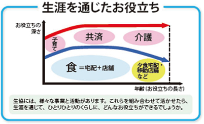

埼玉県委託事業
2019年度役職員研修会について
2019年8月29日 埼玉県生協連
1．はじめに
- (1) 役職員研修会は協同組合や生協の事業、組織運営等、重要な政策テーマについて学び深めることを目的に開催しています。
- (2) 2019年度役職員研修会は、日本生協連が2018年9月から検討を開始した福祉事業中長期戦略の検討の中間報告について学びたいと思います。
2．実施内容
- 日時
- 2019年11月21日（木）13時30分～15時30分
- 会場
- 浦和コミュニティセンター第13集会室
- テーマ
- 「生協が『生涯を通じたお役立ち』をはたすために」
福祉・介護に対する組合員・地域からのニーズは高まり、介護・ヘルスケア産業が市場規模を大きく拡大する中、生協にとっても福祉事業分野は重要な事業分野です。中間報告では、私たちを取り巻く環境変化や生協福祉事業の到達点を踏まえながら、生協事業の中での福祉事業の位置づけを明確にし、発展の方向性を考えます。

※中間報告書より
- 講師
- 日本生活協同組合連合会 福祉事業推進部部長 山際 淳さん
- 対象
- 県連・県内生協役員(非常勤役員含む)、福祉事業部局、関連社会福祉団体役職員
- 定員
- 70人
3．申込方法
11月8日（金）までに生協ごとにとりまとめて、埼玉県生協連の清水までご報告ください。定員を超える申込があった場合には、各生協と調整させていただきます。
お問合せ・申込
埼玉県生活協同組合連合会 清水桂
電話048-844-8971 FAX048-844-8973
Eメール：k.shimizu@saitama-k.com